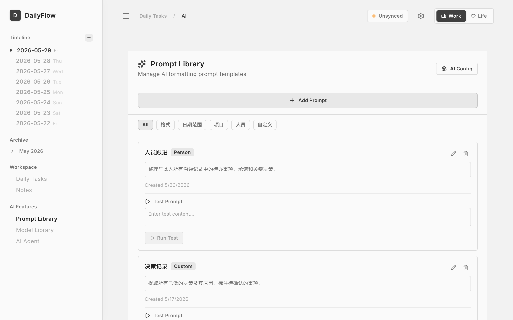

01
今日任务自动迁移
未完成的任务次日自动滚动，保留来源日期。打开 Today 就能继续，不需要手动复制。
本地优先的任务与笔记系统。
Markdown 为唯一数据源，自动迁移未完成任务，AI Chat 可挂载任意笔记与项目上下文。

DailyFlow 相信：大多数任务没完成，是因为信息散落在各处。我们把 Today、Notes 和 AI Chat 连成一条链路，让你始终专注下一步。
未完成的任务次日自动滚动，保留来源日期。打开 Today 就能继续，不需要手动复制。
任意笔记都能挂载到 AI Chat。提问时带上会议记录、项目资料或灵感片段，AI 的回答更贴合你的实际上下文。
Brain Dump 自动提取待办，AI Chat 直接创建任务和笔记。让 AI 处理整理，你只做决策。
从灵感到执行，DailyFlow 给你一条最短路径。不再让想法死在备忘录里。
在 Today 快速添加任务，或在 Notes 里记录会议、灵感。Brain Dump 把零散想法自动归类。
用 Markdown + YAML 记录笔记，支持 `#project:名称`、标签、@提及。笔记与任务双向关联。
在 AI Chat 中挂载今日任务、任意笔记或项目上下文。AI 帮你拆解、总结、生成下一步。
AI 可直接创建任务、保存笔记。你在 Today 里完成它们，未完成的会自动滚动到明天。
不是更花哨的工具，而是让任务、笔记和 AI 对话在同一个本地桌面里协同工作。
原生桌面应用，玻璃质感、毛玻璃层级、Apple 风格动效。



Tauri 桌面壳 + 内置 Node.js 运行时 + 本地 Markdown 文件 — 零外部依赖。
原生窗口、菜单、文件系统、自动更新。
下载即用 — 用户机器无需安装 Node。
本地 HTTP API，操作 Markdown 文件、AI 调用、同步。
Vite 构建、Framer Motion 动效、玻璃质感 UI。
Daily/ · Notes/ · Projects/
一键推 GitHub，IPFS 永久备份，15+ AI 供应商。
每次 AI 输出、任务完成、决策都会留下痕迹。让思考过程可回溯、可审计。
本地文件 + YAML frontmatter。你始终拥有自己的数据 — 可用 Git 同步，可读可写。
B.AI · DeepSeek · Kimi · GLM · Qwen · Claude · GPT · Gemini · Groq · 自定义 OpenAI 兼容 API。配一个 Key 即可。
数据存于本地 Markdown，内置 Node.js 运行时，零外部依赖，下载即可使用。
一键提交到 GitHub，侧边栏显示同步状态。通过 Pinata 上传去中心化备份，获得永久 CID。
未完成的任务自动滚动到下一天，打开 Today 就能继续，不需要手动复制。
数据存于本地，应用完全离线可用。最新版本：v… ·
下载后执行一次（需 sudo）：
sudo xattr -rd com.apple.quarantine /Applications/DailyFlow.app这是 Apple 给未签名应用加的隔离属性。DailyFlow 暂时未做 Apple 公证，本地应用请放心解除。
需要 Node.js ≥ 20（仅开发）。
git clone https://github.com/frankfika/dailyflow.git
cd dailyflow
npm install
npm run dev:all # 开发模式（前端 + 后端）
npm run tauri build # 完整桌面构建